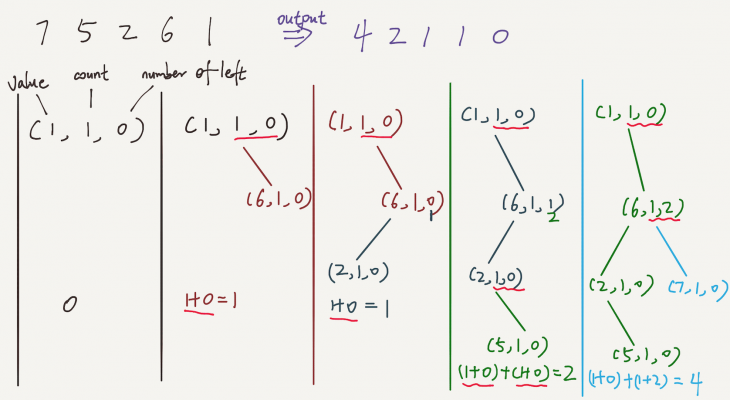

LeetCode Problem
315. Count of Smaller Numbers After Self
Link to LeetCode
Given an integer array nums, return an integer array counts where counts[i] is the number of smaller elements to the right of nums[i].
Example 1:
Input: nums = [5,2,6,1]
Output: [2,1,1,0]
Explanation:
To the right of 5 there are 2 smaller elements (2 and 1).
To the right of 2 there is only 1 smaller element (1).
To the right of 6 there is 1 smaller element (1).
To the right of 1 there is 0 smaller element.
Example 2:
Input: nums = [-1]
Output: [0]
Example 3:
Input: nums = [-1,-1]
Output: [0,0]
for Solution 1
If we want to use binary search, and define a structure like the following:

On average, time complexity is O(n*log(n)) and space complexity is O(n).
class Solution {
public List< Integer> countSmaller(int[] nums) {
List< Integer> result = new ArrayList< Integer>();
if(nums==null || nums.length==0){
return result;
}
Node root = new Node(nums[nums.length-1]);
root.count=1;
result.add(0);
for(int i=nums.length-2; i>=0; i--){
result.add(insertNode(root, nums[i]));
}
Collections.reverse(result);
return result;
}
public int insertNode(Node root, int value){
Node p=root;
int result=0;
while(p!=null){
if(value>p.value){
result+=p.count+p.numLeft;
if(p.right==null){
Node t = new Node(value);
t.count=1;
p.right=t;
return result;
}else{
p=p.right;
}
}else if(value==p.value){
p.count++;
return result+p.numLeft;
}else{
p.numLeft++;
if(p.left==null){
Node t = new Node(value);
t.count=1;
p.left=t;
return result;
}else{
p=p.left;
}
}
}
return 0;
}
}
class Node{
Node left;
Node right;
int value;
int count;
int numLeft;
public Node(int value){
this.value=value;
}
}
// time complexity of adding an element to a list is O(n), because elements after the insertion position need to be shifted.
// So the time complexity is O(n^2(logn)).
public List countSmaller(int[] nums) {
List< Integer> result = new ArrayList();
ArrayList< Integer> sorted = new ArrayList();
for(int i=nums.length-1; i>=0; i--){
if(sorted.isEmpty()){
sorted.add(nums[i]);
result.add(0);
}else if(nums[i]>sorted.get(sorted.size()-1)){
sorted.add(sorted.size(), nums[i]);
result.add(sorted.size()-1);
}else{
int l=0;
int r=sorted.size()-1;
while(l< r){
int m = l + (r-l)/2;
if(nums[i]>sorted.get(m)){
l=m+1;
}else{
r=m;
}
}
sorted.add(r, nums[i]);
result.add(r);
}
}
Collections.reverse(result);
return result;
}